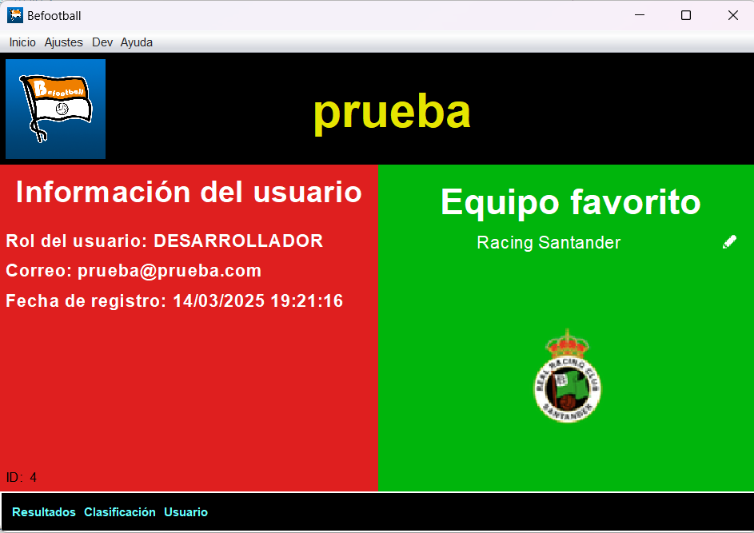

Usuarios
En este menu puedes comprobar informacion del usuario que ha iniciado sesion.
Ademas es posible editar el equipo favorito y acceder a los detalles de este al hacer clic en el escudo.
Tambien se pueden editar los datos del usuario desde la barra de opciones en el apartado de ajustes.
